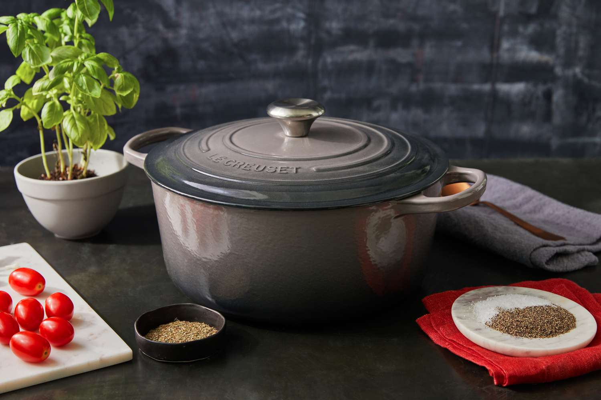

Welcome to Oven Masters
Welcome to Dutch Oven Delights!
Your destination for high-quality Dutch ovens that combine traditional craftsmanship with modern design. Whether you're a seasoned chef or a home cook, our Dutch ovens are crafted to elevate your culinary experience.
Featured Products
Take a look at our top-notch Dutch cooking pots. They make cooking yummy dishes like stews and roasts easy. Come along with us to savor delicious food and tradition with our special Dutch cooking pots.